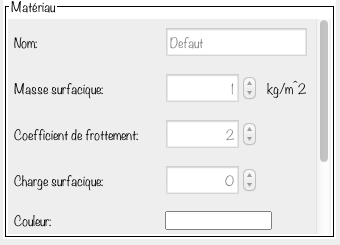

 Un matériau est une propriété modifiable d'un objet. En somme, il définit de quoi l'objet est constitué. Par exemple, un matériau peut être du bois, du métal, de la roche, etc. Il est possible pour l'utilisateur de modifier le matériau d'un objet sélectionné. Pour s'y faire, l'utilisateur doit d'abord sélectionner un objet. Parmi les propriétés modifiables (regroupés dans la section Objet de l'onglet Inspecteur), il se retrouve la propriété Matériau. L'utilisateur peut changer le matériau d'un objet en sélectionnant un nouveau matériau dans la liste déroulante. L'utilisateur peut également créer un matériau personnalisé. Pour s'y faire, l'utilisateur clique sur le + à côté de la liste déroulante. Un nouveau matériau s'ajoute donc à la liste. Afin de modifier les propriétés de ce matériau, l'utilisateur sélectionne d'abord ce matériau dans la liste déroulante (à partir de n'importe quel objet). Ensuite, il pourra modifier les propriétés du matériau sélectionné (masse surfacique, nom, coefficient de frottement et couleur). Pour enregistrer le matériau, il clique sur le bouton Enregistrer. Pour annuler les changements, il clique sur le bouton Réinitialiser.
{kind=link}